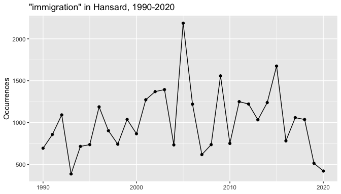
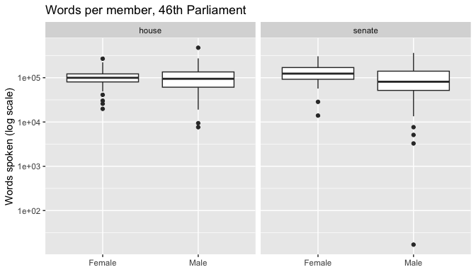

ausparl queries the Australian Hansard database: every sitting of the
House of Representatives and the Senate since 1901, split into turns
(speeches, questions, answers and interjections) and linked to members,
parties, ministries and electorates. This vignette walks through a
typical analysis in eight steps. It was computed on the full database;
the code works the same on the small sample database bundled with the
package, though the answers differ. For a shorter worked example to run
from start to finish, see the example/ folder of the GitHub
repository.
1. Getting the data
The database is a single DuckDB file, hansard.duckdb, of
about 9.5 GB. ausparl does not ship it. Each ausparl release is pinned
to one version of the database on Zenodo, which
db_download() fetches:
It saves the database in your user data directory, resumes an
interrupted download when you run it again, and checks the file before
installing it. After that, db_connect() and every other
ausparl function use it with no further setup. To keep the file in a
folder of your own instead, give it with
db_download(dir = "dataset"), which returns the installed
file’s path, and open that copy with
db_connect(path = ).
If you already have a copy, point the AUSPARL_DB
environment variable at it instead, for example in your
~/.Renviron. It takes precedence over the downloaded
copy:
Sys.setenv(AUSPARL_DB = "/path/to/hansard.duckdb")Every ausparl function then connects to it when first needed. To try the package without the full database, connect to the sample bundled with it instead:
db_connect(sample = TRUE)The database is always opened read-only, and DuckDB’s memory use is
capped by the ausparl.memory_limit option (3 GB by
default).
2. Connect and check the version
db_connect() with no arguments opens the database named
by AUSPARL_DB. db_info() reports which build
you are using; quote its schema_version and
built_at in your methods.
db_connect()
db_info() |>
select(schema_version, built_at, n_sittings, n_actions, n_members, fts_available)
#> # A tibble: 1 × 6
#> schema_version built_at n_sittings n_actions n_members
#> <chr> <dttm> <int> <int> <int>
#> 1 7.0.0 2026-11-23 13:40:39 15585 6510255 1881
#> # ℹ 1 more variable: fts_available <lgl>3. Find a member
Members are identified by their Parliamentary Handbook id,
PHID. find_member() looks one up from pieces
of a name, in any order and any case.
howard <- find_member("john howard")
howard |> select(PHID, Gender, State, chambers, first_service, last_service)
#> # A tibble: 1 × 6
#> PHID Gender State chambers first_service last_service
#> <chr> <chr> <chr> <chr> <date> <date>
#> 1 ZD4 Male New South Wales house 1974-05-18 2007-11-24member_profile() gathers everything recorded about one
member into a list of tables. A ministerial role reads as
Role, Prep and Entity together,
such as “Minister Assisting the Prime Minister”.
profile <- member_profile("ZD4")
sapply(profile, nrow)
#> members parl_service party_service
#> 1 13 1
#> ministry_records shadow_ministry_records committee_members
#> 19 21 7
#> occupations qualifications schools
#> 3 1 0
profile$parl_service |> select(Electorate, DateStart, DateEnd) |> head(3)
#> # A tibble: 3 × 3
#> Electorate DateStart DateEnd
#> <chr> <date> <date>
#> 1 Bennelong 1974-05-18 1975-12-13
#> 2 Bennelong 1975-12-13 1977-12-10
#> 3 Bennelong 1977-12-10 1980-10-18
profile$ministry_records |>
distinct(Role, Prep, Entity, RDateStart, RDateEnd) |>
arrange(RDateStart)
#> # A tibble: 8 × 5
#> Role Prep Entity RDateStart RDateEnd
#> <chr> <chr> <chr> <date> <date>
#> 1 Minister "for" "Business and Consumer… 1975-12-22 1977-07-17
#> 2 Minister "Assisting the" "Prime Minister" 1977-05-24 1977-12-20
#> 3 Minister "for" "Special Trade Negotia… 1977-07-17 1977-12-20
#> 4 Treasurer "" "" 1977-11-19 1983-03-11
#> 5 Cabinet Minister "" "" 1977-12-20 1983-03-11
#> 6 Minister "for" "Finance" 1979-02-23 1979-02-27
#> 7 Cabinet Minister "" "" 1996-03-11 2007-12-03
#> 8 Prime Minister "" "" 1996-03-11 2007-12-034. That member’s turns
get_speeches() returns one row per turn. Here we take
John Howard’s turns as a Liberal in the 41st Parliament (2004-2007), his
last as Prime Minister. The party filter applies to the
party at the time of the turn, so it also works for members who changed
party. include_text = FALSE leaves out the speech text,
which keeps the result small.
turns <- get_speeches(
member = "ZD4",
party = "Liberal Party of Australia",
parliament_id = 41,
include_text = FALSE
)
nrow(turns)
#> [1] 2292
turns |> count(is_speech, is_question, is_answer)
#> # A tibble: 3 × 4
#> is_speech is_question is_answer n
#> <lgl> <lgl> <lgl> <int>
#> 1 FALSE FALSE TRUE 1971
#> 2 FALSE TRUE FALSE 3
#> 3 TRUE FALSE FALSE 318With collect = FALSE the result stays in the database as
a lazy table, so dplyr verbs run inside DuckDB. Here we count his turns
in every parliament he sat in.
get_speeches(member = "ZD4", include_text = FALSE, collect = FALSE) |>
count(parliament_id) |>
arrange(parliament_id) |>
collect()
#> # A tibble: 13 × 2
#> parliament_id n
#> <int> <dbl>
#> 1 29 230
#> 2 30 417
#> 3 31 776
#> 4 32 720
#> 5 33 571
#> 6 34 766
#> 7 35 514
#> 8 36 501
#> 9 37 1094
#> 10 38 2341
#> 11 39 1931
#> 12 40 1727
#> 13 41 22925. Search for a term
search_speeches_by_terms() finds the turns that use a
word or phrase. It returns one row per matching turn, with
n_hits, the exact number of occurrences in that turn.
Counts by year or by speaker are ordinary aggregations over that result.
Use collect = FALSE so that they run inside DuckDB, and
include_text = FALSE so the text is not loaded.
hits <- search_speeches_by_terms(
"immigration",
from = 1990, to = 2020,
include_text = FALSE, collect = FALSE
)
hits |>
summarise(n_turns = n(), n_occurrences = sum(n_hits, na.rm = TRUE)) |>
collect()
#> # A tibble: 1 × 2
#> n_turns n_occurrences
#> <dbl> <dbl>
#> 1 13810 31298Mentions per year:
by_year <- hits |>
group_by(year = year(date)) |>
summarise(n_turns = n(), n_occurrences = sum(n_hits, na.rm = TRUE)) |>
collect() |>
arrange(year)
head(by_year)
#> # A tibble: 6 × 3
#> year n_turns n_occurrences
#> <dbl> <dbl> <dbl>
#> 1 1990 240 694
#> 2 1991 307 858
#> 3 1992 395 1092
#> 4 1993 187 387
#> 5 1994 371 716
#> 6 1995 327 737
ggplot(by_year, aes(year, n_occurrences)) +
geom_line() +
geom_point() +
labs(x = NULL, y = "Occurrences", title = "\"immigration\" in Hansard, 1990-2020")
Occurrences of ‘immigration’ per year, 1990-2020.
Who mentioned it most? Joining to the members table adds names. We
keep only turns with a member id (PHID).
hits |>
filter(!is.na(PHID)) |>
group_by(PHID) |>
summarise(n_turns = n(), n_occurrences = sum(n_hits, na.rm = TRUE)) |>
left_join(get_members(columns = c("PHID", "DisplayName"), collect = FALSE), by = "PHID") |>
arrange(desc(n_occurrences)) |>
head(10) |>
collect()
#> # A tibble: 10 × 4
#> PHID n_turns n_occurrences DisplayName
#> <chr> <dbl> <dbl> <chr>
#> 1 0J4 413 1062 RUDDOCK, the Hon. Philip Maxwell, AO
#> 2 DT6 341 835 BARTLETT, Andrew John Julian
#> 3 E3L 313 727 MORRISON, the Hon. Scott John AC
#> 4 QJ4 166 608 THEOPHANOUS, the Hon. Dr Andrew Charles
#> 5 8T4 203 469 FERGUSON, the Hon. Laurie Donald Thomas, OAM
#> 6 I0U 174 462 HANSON-YOUNG, Sarah Coral
#> 7 I0M 235 455 CASH, the Hon. Michaelia Clare
#> 8 00AOR 91 389 NETTLE, Kerry Michelle
#> 9 84N 156 381 LUDWIG, the Hon. Joseph (Joe) William
#> 10 WF6 83 368 DANBY, the Hon. Michael David6. Add context
The add_ functions add what was true of the speaker on
the day of each turn. Here we take the 2005 turns that mention
immigration and add each speaker’s party, role and whether their party
was in government. add_party() notes that the search result
already carries the party columns and adds only the abbreviation.
turns_2005 <- search_speeches_by_terms("immigration", from = 2005, to = 2005,
include_text = FALSE)
with_context <- turns_2005 |>
add_party() |>
add_role() |>
add_government_status()
#> Skipping party_id_at_time and party_at_time: already in `x`.
with_context |>
select(date, PHID, party_abbrev_at_time, role_at_time, government_status_at_time) |>
head()
#> # A tibble: 6 × 5
#> date PHID party_abbrev_at_time role_at_time government_status_at_t…¹
#> <date> <chr> <chr> <chr> <chr>
#> 1 2005-10-12 7E4 LIB minister government
#> 2 2005-10-10 00AOO ALP backbencher opposition
#> 3 2005-06-22 ZJ6 LIB backbencher government
#> 4 2005-06-14 83T ALP shadow_minister opposition
#> 5 2005-09-13 DYW ALP shadow_minister opposition
#> 6 2005-10-12 MP6 LIB backbencher government
#> # ℹ abbreviated name: ¹government_status_at_time
with_context |> count(government_status_at_time, role_at_time)
#> # A tibble: 4 × 3
#> government_status_at_time role_at_time n
#> <chr> <chr> <int>
#> 1 government backbencher 133
#> 2 government minister 169
#> 3 opposition backbencher 295
#> 4 opposition shadow_minister 225Turns with no member id get NA in the added columns.
7. Speaking activity
member_activity() counts turns, speeches, questions,
answers, interjections and words for each member, parliament and
chamber. Here we compare members of the 46th Parliament (2019-2022) by
gender, taking Gender from the members table.
activity <- member_activity(parliament_id = 46) |>
left_join(get_members(columns = c("PHID", "Gender")), by = "PHID")
activity |>
group_by(chamber, Gender) |>
summarise(
members = n(),
median_turns = median(n_turns),
median_words = median(n_words),
.groups = "drop"
)
#> # A tibble: 4 × 5
#> chamber Gender members median_turns median_words
#> <chr> <chr> <int> <dbl> <dbl>
#> 1 house Female 47 198 99633
#> 2 house Male 106 211 94543
#> 3 senate Female 41 393 123765
#> 4 senate Male 43 247 81159
ggplot(activity, aes(Gender, n_words)) +
geom_boxplot() +
facet_wrap(~chamber) +
scale_y_log10() +
labs(x = NULL, y = "Words spoken (log scale)", title = "Words per member, 46th Parliament")
Words spoken per member in the 46th Parliament, by gender.
8. Hand off to text analysis
as_corpus() turns a result with text into a quanteda
corpus, keeping the other columns as document variables. Here we take
twenty of John Howard’s turns that mention immigration while he was
Prime Minister.
howard_immigration <- search_speeches_by_terms(
"immigration",
member = "ZD4", chamber = "house", from = 1996, to = 2007,
limit = 20
)
corp <- as_corpus(howard_immigration)
corp
#> corpus of 20 documents (19,882 characters) and 19 docvars.
#> house_1997-05-26_R178 :
#> "Are you a high immigration man? No, you are not, are you? Wh..."
#>
#> house_2006-12-06_R207 :
#> "It is significant that over the past few years—despite every..."
#>
#> house_1996-10-08_R16 :
#> "The government a couple of months ago made some changes to A..."
#>
#> house_1997-05-26_R189 :
#> "If you had taken the advice of the FitzGerald report, which ..."
#>
#> house_2006-06-22_R236 :
#> "The direct answer to the first part of the question is no, I..."
#>
#> house_2000-10-03_R26 :
#> "I inform the House that the Minister for Immigration and Mul..."
#>
#> [ reached max_ndoc ... 14 more documents ]